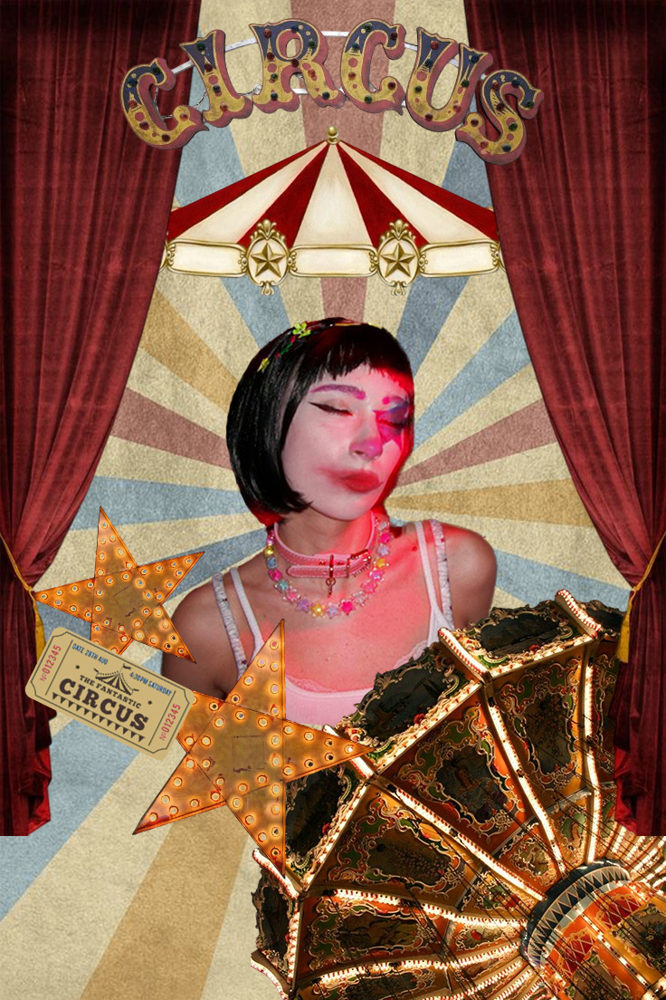
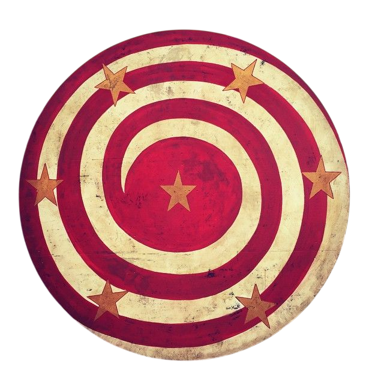
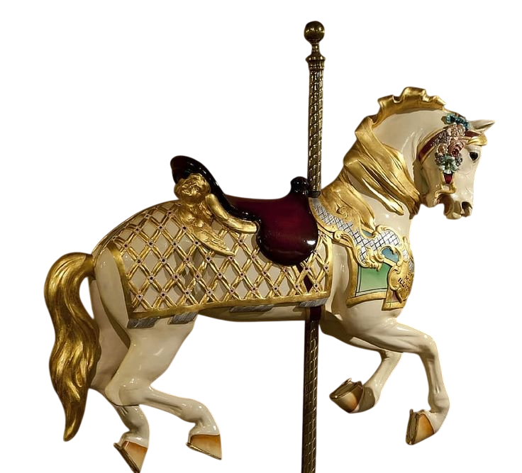
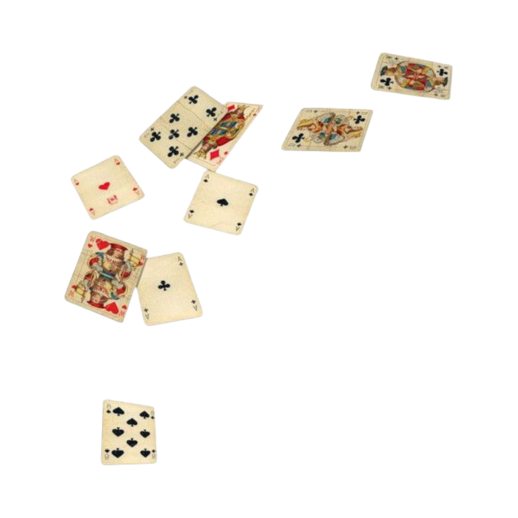
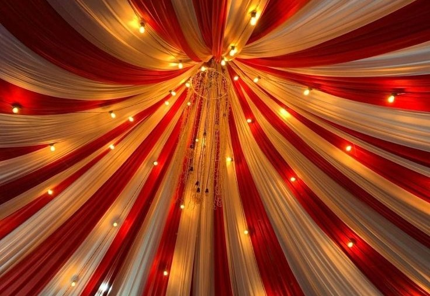
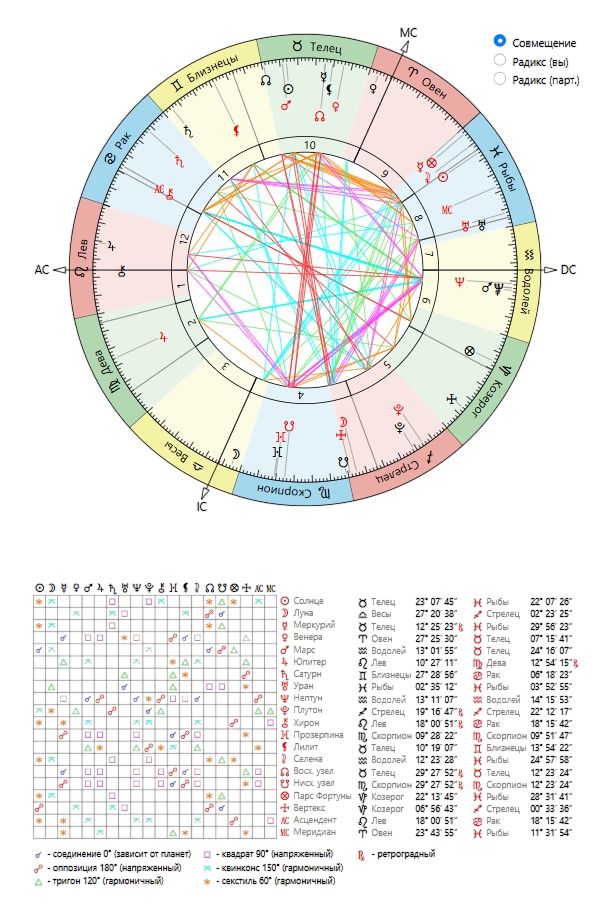
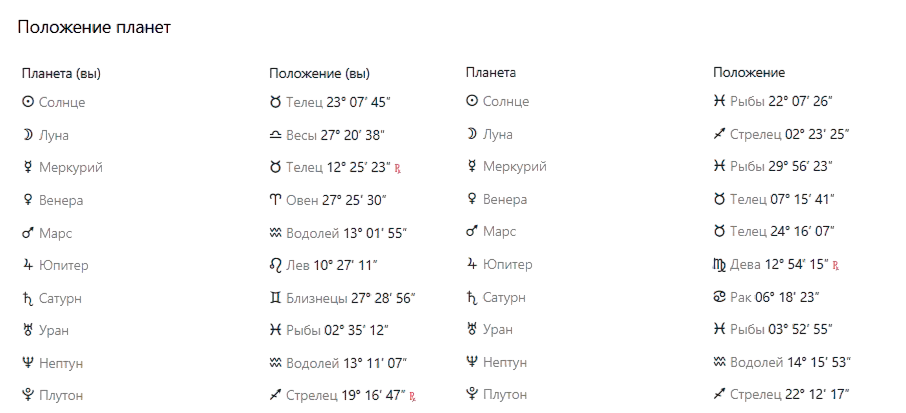

Natal chart


Секстиль Солнце – Солнце
Это очень приятный аспект для дружбы. Он показывает, что вы с другом в целом понимаете, что движет каждым из вас, уважаете индивидуальность друг друга и умеете поддерживать в важных начинаниях. Вам не нужно постоянно конкурировать или доказывать свою значимость — наоборот, рядом друг с другом легче раскрывать свои сильные стороны.
Обычно такие аспекты дают ощущение комфортного общения и взаимного уважения. Вы можете заниматься совершенно разными вещами, но при этом искренне радоваться успехам друг друга. Такая дружба часто строится на принципе: «Я знаю, какой ты человек, и принимаю тебя таким, какой ты есть».
Секстиль Солнце – Меркурий
Этот аспект делает общение одной из главных сильных сторон вашей дружбы. Вам легко обсуждать идеи, делиться новостями, советоваться по разным вопросам и просто разговаривать обо всём подряд. Даже если мнения иногда расходятся, диалог обычно остаётся живым и интересным.
Друг может подкидывать тебе новые мысли и неожиданные взгляды на ситуацию, а ты помогаешь этим идеям обрести форму и направление. Вместе вы способны вдохновлять друг друга на новые проекты, учёбу, путешествия или просто интересные жизненные решения.
Соединение Солнце – Марс
Это очень энергичная комбинация. Рядом друг с другом вы словно заряжаете друг друга активностью и энтузиазмом. После общения может появляться желание что-то делать, куда-то ехать, пробовать новое или решать давно отложенные вопросы.
Конечно, иногда такой аспект может давать споры или небольшое соперничество. Но в дружбе это чаще проявляется как взаимное подталкивание к развитию. Вы можете спорить, подкалывать друг друга или соревноваться, но при этом именно такая динамика делает отношения живыми и интересными.
Соединение Меркурий – Венера
Очень тёплый аспект для дружбы. Он показывает, что вам приятно общаться не только на серьёзные темы, но и просто проводить время вместе. Есть взаимная симпатия как к личности человека, интерес к его мыслям, вкусам и взглядам на жизнь.
Обычно при таком аспекте друзья легко находят общий язык практически в любой ситуации. Даже если возникают недопонимания, желание сохранить хорошие отношения оказывается сильнее мелких разногласий. С таким человеком приятно делиться своими переживаниями, радостями и повседневными событиями.
Тригон Меркурий – Юпитер
Это один из самых приятных аспектов для интеллектуальной дружбы. Вы помогаете друг другу смотреть на мир шире, обсуждать интересные темы, делиться опытом и вдохновлять друг друга на развитие. Разговоры могут легко переходить от бытовых вещей к философии, путешествиям, планам на будущее или глобальным жизненным вопросам.
Особенно хорошо этот аспект работает, если вы любите узнавать что-то новое. Рядом друг с другом появляется ощущение, что мир становится больше и интереснее. Вы способны мотивировать друг друга учиться, расти и не зацикливаться на мелких проблемах.
Квадрат Меркурий – Нептун
Пожалуй, одна из главных зон недопонимания в вашей дружбе. Иногда вам может казаться, что вы обсуждаете одно и то же, но вкладываете в слова совершенно разный смысл. Один говорит о фактах и логике, другой — об ощущениях, настроении и интуиции.
Но для давней дружбы этот аспект часто превращается не в проблему, а в особенность общения. Просто со временем вы учитесь понимать, что некоторые вещи друг другу нужно объяснять чуть подробнее. Зато благодаря этой разнице каждый из вас помогает другому видеть ситуацию под новым углом.
Тригон Венера – Плутон
Если убрать романтическую трактовку, этот аспект говорит о глубокой эмоциональной привязанности и сильном взаимном влиянии. Есть друзья, с которыми просто приятно общаться, а есть друзья, которые действительно оставляют след в жизни. Судя по этому аспекту, ваш случай ближе ко второму варианту.
Вы способны поддерживать друг друга в сложные периоды, обсуждать довольно личные темы и помогать друг другу меняться к лучшему. Часто такая дружба переживает множество жизненных этапов и становится только крепче. Вы можете замечать, что рядом друг с другом становитесь более уверенными в себе или начинаете смотреть на некоторые вещи глубже.
Соединение Марс – Нептун
Очень интересный аспект, потому che он одновременно даёт вдохновение и периодические недопонимания. Друг может помогать тебе смотреть на вещи менее прямолинейно, замечать детали, которые обычно ускользают от внимания. А ты, в свою очередь, можете помогать ему воплощать идеи в реальность и не застревать только в размышлениях.
Иногда, правда, этот аспект может создавать путаницу. Бывают ситуации, когда кто-то что-то подразумевал, а другой понял совершенно иначе. Но если дружба уже проверена временем, такие моменты обычно быстро проходят. Скорее всего, вы уже давно изучили особенности характера друг друга и умеете сглаживать подобные недоразумения.
Оппозиция Юпитер – Нептун
Этот аспект показывает, что ваши взгляды на некоторые жизненные вопросы могут заметно различаться. Один из вас может быть более идеалистичным и верить в возможности без ограничений, а другой чаще задаётся вопросом: «А как это будет работать на практике?»
Однако в дружбе это может оказаться даже полезным. Вместо того чтобы смотреть на мир одинаково, вы дополняете друг друга. Когда один слишком увлекается мечтами, второй помогает вернуться к реальности. А когда кто-то становится слишком серьёзным или осторожным, другой напоминает, что без веры в хорошее двигаться вперёд тоже сложно.
Оппозиция Сатурн – Плутон
Это, пожалуй, один из самых непростых аспектов в вашей карте совместимости. Он может проявляться как борьба характеров в серьёзных вопросах. Иногда вам обоим кажется, что именно ваш способ решения проблемы является правильным, поэтому возникают упрямые споры.
Но в дружбе, которая существует давно, такой аспект часто работает иначе. Вы учитесь уважать силу характера друг друга. Да, временами можете спорить до последнего, но именно благодаря этому никто из вас не позволяет другому сдаваться или опускать руки. Иногда самые полезные советы приходят именно от человека, который не боится сказать неприятную правду.
Соединение Уран – Уран
Это поколенческий аспект, который показывает, что вы росли примерно в одинаковой среде и сталкивались со схожими тенденциями своего времени. Поэтому многие вещи вы понимаете практически без объяснений.
Часто такие друзья имеют похожее чувство юмора, одинаково реагируют на многие события и легко находят общие темы для разговоров. Вам проще понимать, почему другой человек думает именно так, потому что жизненный опыт во многом формировался в похожих условиях.
Соединение Нептун – Нептун
Этот аспект создаёт ощущение внутреннего понимания на уровне поколения. У вас могут быть похожие мечты, интерес к схожим темам, одинаковое восприятие каких-то культурных явлений или жизненных ценностей.
В дружбе он обычно проявляется очень мягко. Это не тот аспект, который делает отношения яркими, но он помогает чувствовать эмоциональную близость и находить точки соприкосновения даже спустя долгое время.
Соединение Плутон – Плутон
Ещё один поколенческий аспект, который говорит о сходном жизненном опыте и похожем отношении к серьёзным переменам. Вы оба проходите через важные этапы взросления примерно одинаковым образом, поэтому вам легче понимать переживания друг друга.
Такие аспекты особенно заметны в долгой дружбе. Со временем появляется ощущение, что человек действительно знает тебя, потому что сам сталкивался с похожими вызовами и вопросами.
Общий вывод
Из всех дружеских совместимостей, которые ты присылал раньше, эта выглядит одной из самых сильных именно для дружбы и совместного развития. Здесь очень много аспектов общения: Солнце–Меркурий, Меркурий–Венера, Меркурий–Юпитер. Они создают ощущение, что вам действительно интересно друг с другом разговаривать и обмениваться идеями.
Да, есть несколько напряжённых моментов — прежде всего квадрат Меркурий–Нептун и оппозиция Сатурн–Плутон. Из-за них периодически могут возникать недопонимания или упрямые споры. Но хороших аспектов заметно больше, и они сильнее работают на долгосрочную перспективу.
Если описать эту дружбу одной фразой, то это связь двух людей, которые умеют вдохновлять друг друга, много общаются, помогают друг другу расти и сохраняют интерес друг к другу даже спустя годы. Для настоящей крепкой дружбы это очень хороший показатель.